Film de marque · i-Lynx · Pardalys
Valoriser le showroom haute sécurité d'i-Lynx par un reportage photographique
Une série photographique précise et immersive pour mettre en valeur le showroom technologique d'i-Lynx : mur d'écrans de supervision, contrôle d'accès, caméras IA et simulateur d'entraînement.
- Client
- i-Lynx · Pardalys
- Secteur
- Systèmes de sécurité, sûreté & vidéosurveillance
- Livrables
- Reportage photo corporate & industriel HD (plus de 55 visuels livrés)
- Année · Durée
- 2025 · Livraison selon les deadlines client
Résultats obtenus
- 55+photos HD livrées pour le web & les supports
- 100%des technologies du showroom valorisées
- 4 pôlessupervision, accès, détection & simulation
- B2Bbanque d'images propriétaire clé en main
01 — Contexte
Le contexte & les enjeux
Pour accompagner son développement commercial, l'entreprise de sécurité i-Lynx souhaitait mettre en avant son showroom technologique à travers un reportage photographique professionnel. L'enjeu était de montrer concrètement à ses clients et partenaires l'étendue de ses solutions : mur d'images de télésurveillance, barrières et contrôle d'accès LPR, caméras motorisées, générateur de brouillard anti-intrusion et salle de simulation.
02 — Attentes
Ce que le client attendait
- Mettre en valeur l'ensemble du showroom i-Lynx avec un rendu haut de gamme, technologique et crédible
- Photographier à la fois les vues d'ensemble (mur d'écrans, barrière automatique, totem d'urgence) et les détails techniques (caméras dômes PTZ, claviers biométriques, pupitre de commande)
- Incarner l'expertise humaine avec des mises en situation d'opérateurs au poste de supervision et en salle de simulation
- Constituer une banque d'images complète pour le site web, les présentations commerciales et LinkedIn
03 — Contraintes
Les contraintes du projet
- Gestion des fortes différences d'exposition entre le mur d'écrans LED, l'enseigne lumineuse i-Lynx et l'éclairage ambiant du showroom
- Éviter le moiré et les reflets parasites sur les moniteurs de contrôle, les optiques de caméras et les panneaux noirs brillants
- Capturer des ambiances très contrastées : du showroom lumineux jusqu'à la salle de simulation laser plongée dans la pénombre bleutée et aux tests de brouillard opacifiant
- Assurer une parfaite netteté sur les interfaces logicielles d'analyse vidéo et les équipements électroniques
04 — Propositions
Les pistes que nous avons proposées
-
Des photos catalogue isolées produit par produit
Photographier chaque caméra ou boîtier séparément : utile pour une fiche technique, mais incapable de montrer l'intégration globale du showroom.
-
Des vues grand-angle purement immobilières
Montrer les pièces vides en très grand-angle, au risque de perdre la dimension technologique et opérationnelle des équipements.
-
Un reportage immersif alliant architecture du showroom, précision produit et posture métier Piste retenue
Alterner des perspectives structurées du showroom complet, des plans serrés sur les optiques et terminaux, et des mises en situation réelles au pupitre de supervision et en salle tactique.
05 — Solution
La solution retenue
Nous avons retenu cette approche complète en trois niveaux de lecture : les vues larges installent immédiatement l'envergure du showroom i-Lynx, les gros plans soulignent la qualité du matériel (caméras, contrôle d'accès, pupitres), et les scènes incarnées démontrent le savoir-faire opérationnel des équipes.
06 — Production
Tournage & montage
Tournage
Prises de vues au boîtier plein format haute définition avec optiques lumineuses, équilibrage précis des températures de couleur entre écrans LED, néons et éclairage ambiant.
Montage
Sélection rigoureuse, développement colorimétrique soigné (fidélité du rouge identitaire i-Lynx et propreté des noirs) et livraison en haute définition.
Équipe
Photographe corporate & industriel dédié.
07 — Résultat
Le résultat
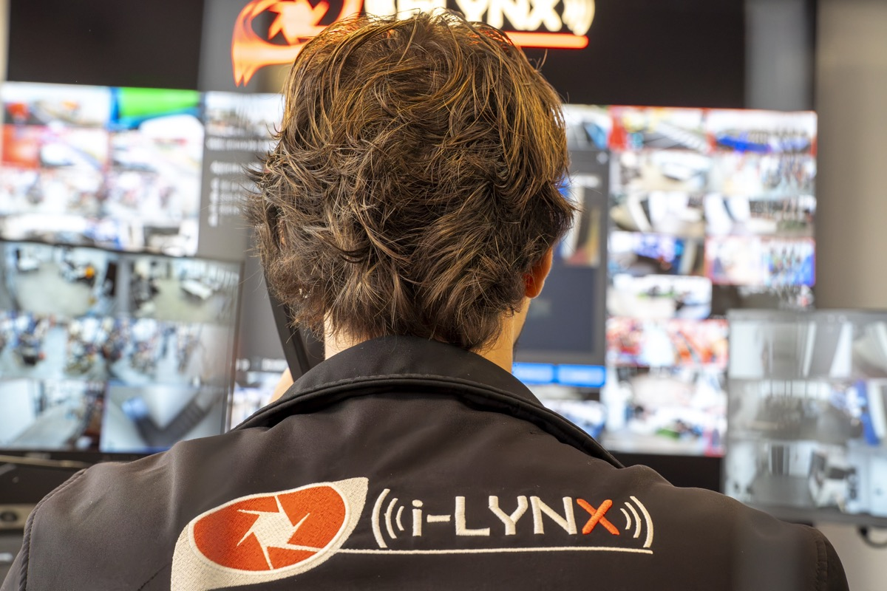
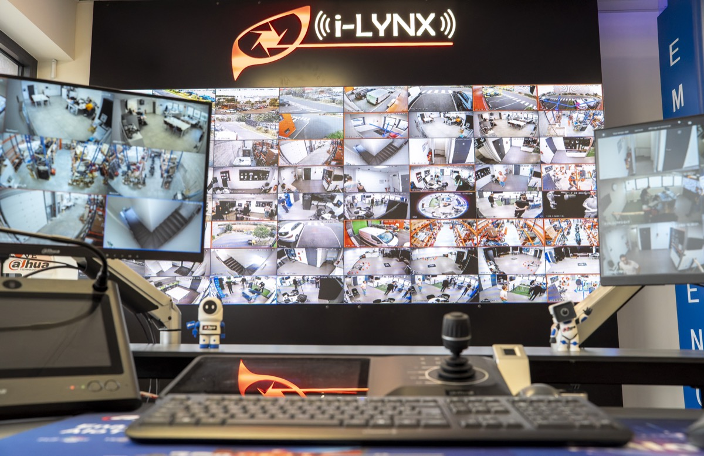
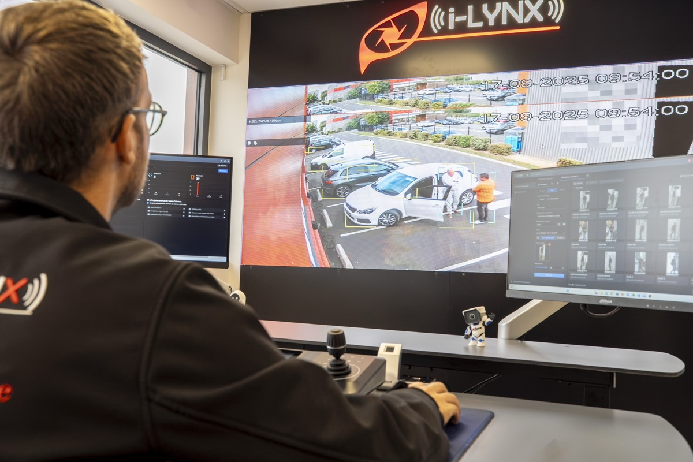
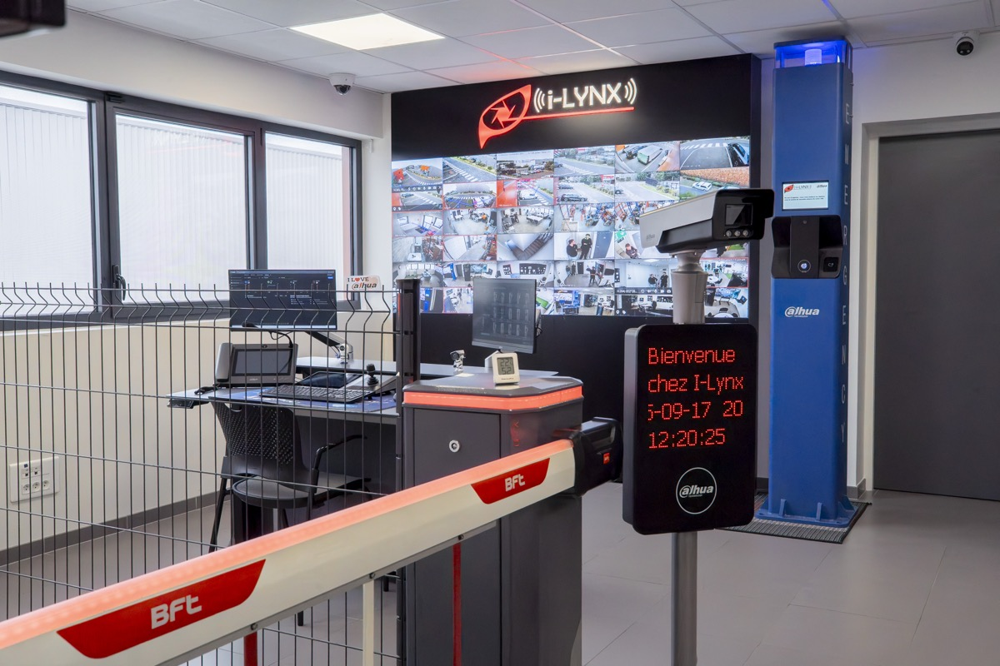
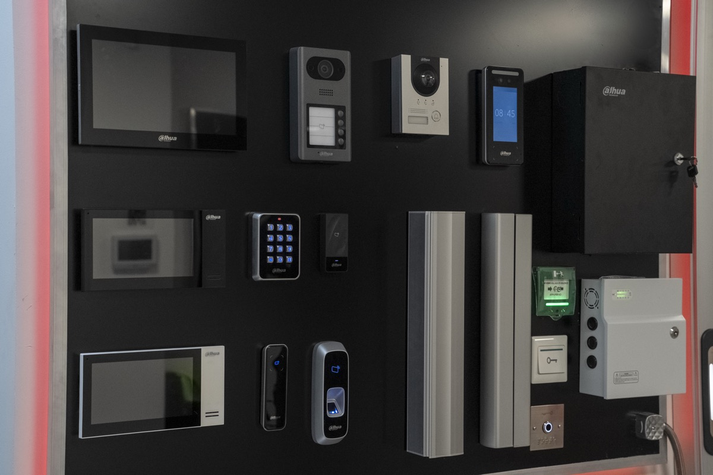
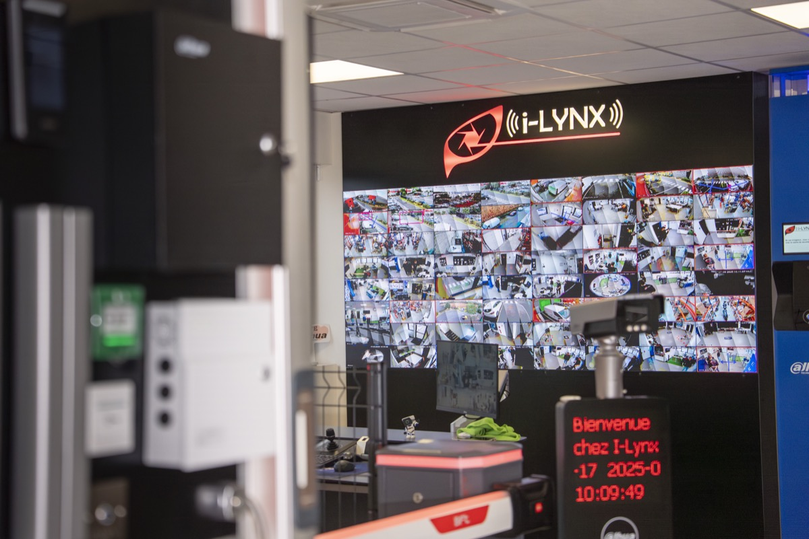
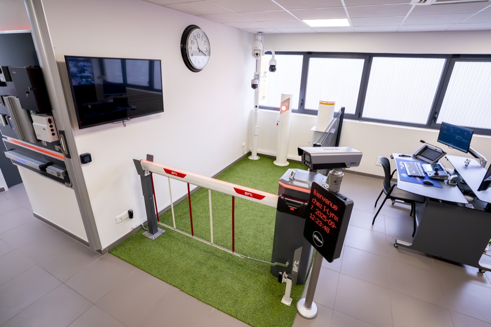
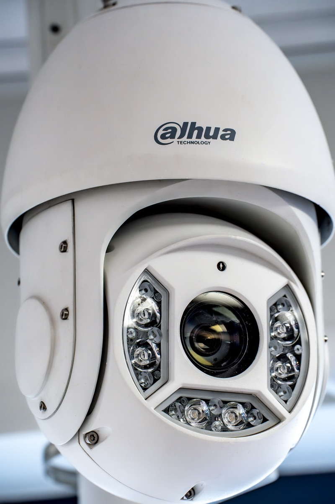
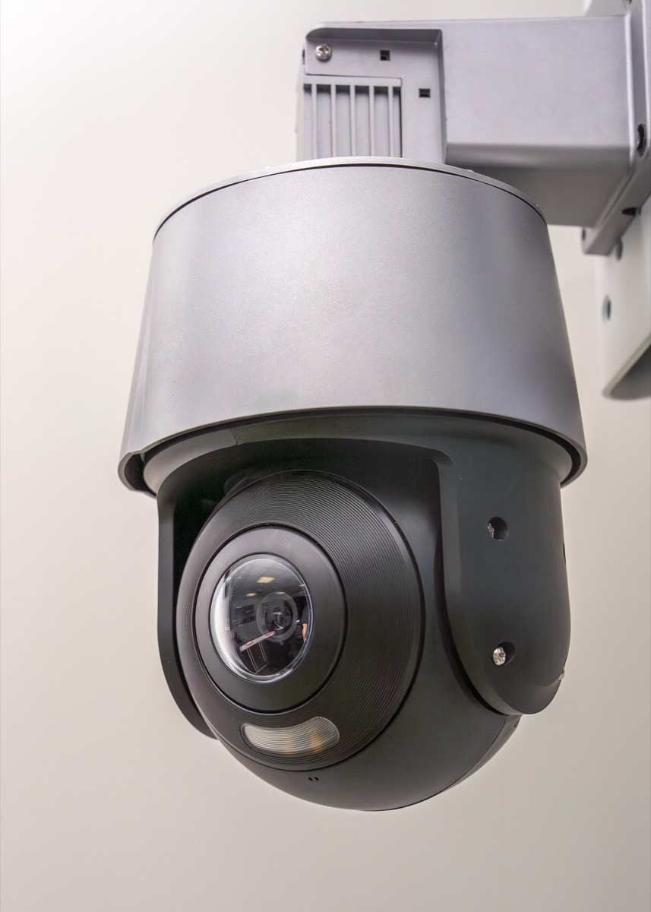
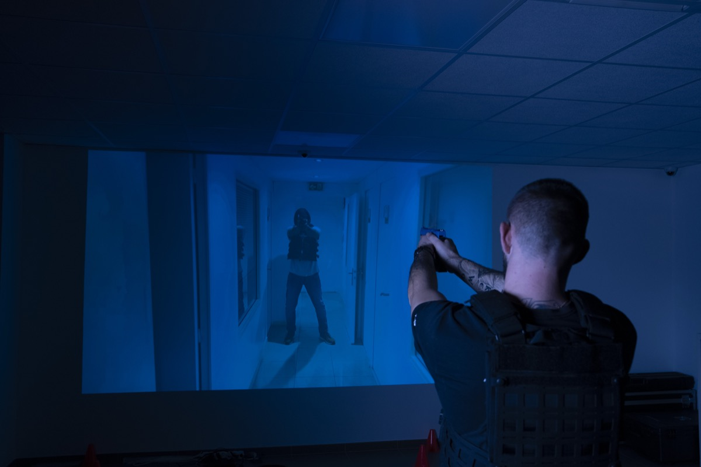
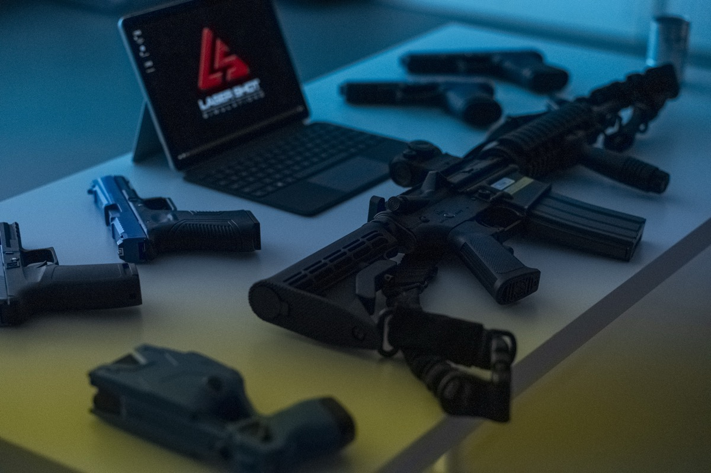
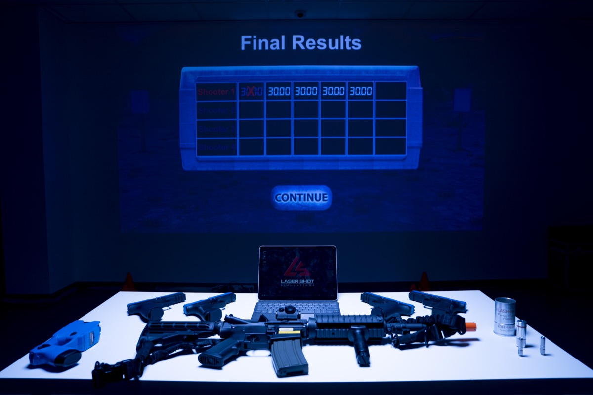
Les photos mettent parfaitement en valeur notre showroom et la technicité de nos équipements. C'est un vrai atout pour nos présentations clients et notre communication.

Et si le prochain cas client, c'était le vôtre ?
Parlez-nous de vos enjeux. Nous revenons vers vous avec des idées concrètes, pas avec un devis générique.